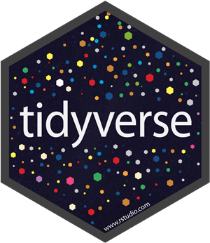
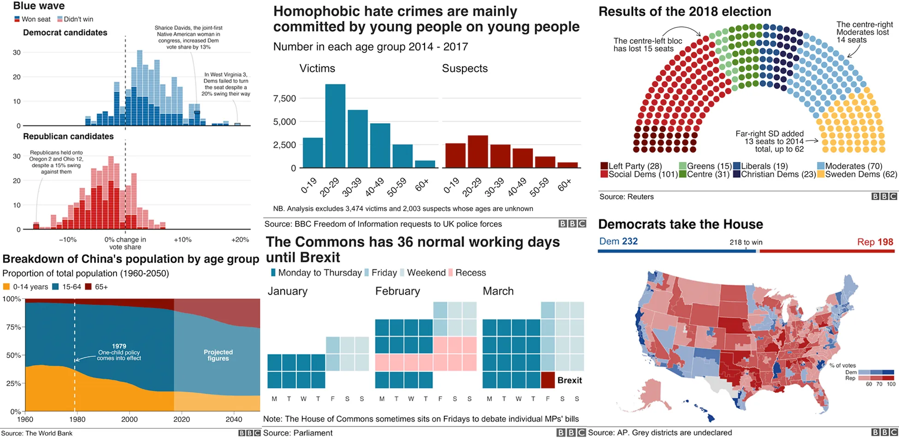

1. Why R Programming?
1.1 What’s Special about R?
R was developed by statisticians, Ross Ihaka and Robert Gentleman, to specifically cater to the needs of statistical analysis and data visualization. Unlike general-purpose programming languages, R’s core features are designed to handle complex datasets and make it easier to perform tasks like modeling, plotting, and statistical analysis.

One of the standout features of R is the tidyverse, a
collection of “packages” created by Hadley Wickham and others to
make data manipulation, visualization, and analysis more intuitive and
consistent. The tidyverse follows a unified approach to data analysis,
emphasizing human-readable code and tidy data principles, which make it
especially accessible for beginners while being powerful for advanced
users.

R is also open-source software, meaning it’s free to use and
modify. This has allowed a global community of developers to create
specialized tools (called “packages” in R) for virtually every area
of data science. For example, many tools widely used in biology and
bioinformatics—like genome sequencing and gene expression analysis—were
developed in R. This makes it an ideal first choice for biologists and
biomedical researchers starting their programming journey.
1.2 R vs. Microsoft Excel
While Excel is a great tool for small-scale data manipulation and visualization, R offers significant advantages for customization and scalability:
- Custom Features: In Excel, you’re often limited to built-in formulas and features for basic usage, but in R, you can conveniently write your own functions or use packages to create custom workflows, allowing you to handle more complex tasks much more easily.
- Professional Visualizations: R allows you to create publication-ready visualizations with packages like ggplot2, which offer greater control over design and aesthetics.

BBC Visual and Data Journalism team works with graphics in R
- Scalability: Excel struggles with very large datasets, often crashing or slowing down with tens of thousands of rows. In R, you don’t need to load the entire dataset into memory at once, as workflows often involve sampling and quality control to efficiently handle even millions of rows of data, provided your computer has sufficient resources.
1.3 R vs. Python
The debate between R and Python remains a hot topic in data science. Here’s a simple breakdown:
- Ease of Use: Python is often considered more intuitive as a general-purpose language, but R, especially with packages like tidyverse, provides a more elegant and structured way to handle data science tasks.
- Specialized Tools: R is packed with tools designed by statisticians and researchers, making it particularly strong in biology and bioinformatics. Many statistical methods and visualization tools used in bioinformatics/computational biology appear in R first.
- Flexibility: Python is highly versatile and widely used in areas like web development, AI, and machine learning. For cutting-edge AI tools and modules, Python has a clear edge.
1.4 Takeaway
Programming languages are just tools. While learning the syntax of a language like R or Python is important, the most critical skill is learning how to think logically and solve problems. If Microsoft Excel is faster and more convenient for you and it’s sufficient to solve your problems, then use Excel.
“It doesn’t matter whether a cat is black or white, as long as it catches mice.” - Deng Xiaoping
Today, with tools like LLMs (e.g., ChatGPT), you can get
assistance writing code in any language so it’s way easier for beginners
to navigate through coding, but it’s your ability to define the
problem and structure a solution that makes the real difference.
What matters most is understanding what you want to achieve and using
the right language or tool for the task.
What you need to be able to handle is how to define your problem, how to address it in steps, then what tools and functions to use. A lot of the time, the functions will be available in both R and Python—you just need to know the right codes and the right grammar.
Think of programming like learning a language. When you want to communicate something, you start with an idea in your head (your problem). Then, you figure out how to express it in words (your steps). Finally, you choose the right vocabulary and grammar (your syntax and functions). Whether you’re speaking English, Thai, or French, as long as you know what you want to say, the language is just the tool you use to express it.
Programming works the same way! However, a practical way to
learn is to start with one so you know what you can do. Once you’re good
at one programming language, learning another is much easier. It’s like
learning how to say the same thing in a different language!
Some other benefits to know R Programming
- Many research projects in biomedical science (including mine!) rely on R. If you know even a little R, you can jump into interesting lab work way faster.
- It looks great on your CV! Having R Programming skills makes you stand out for internships, research projects, and even jobs.
- You can explore your own data. Imagine being able to analyze and make sense of your own research without waiting for someone else to do it for you.
Previous: Table of Contents | Next: 2. Installation of Base R and RStudio